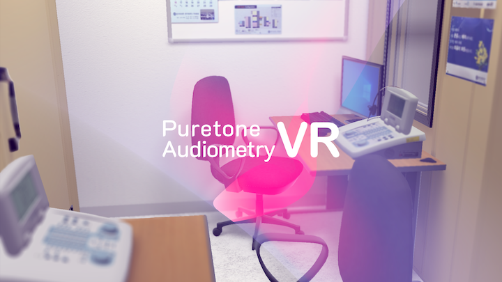
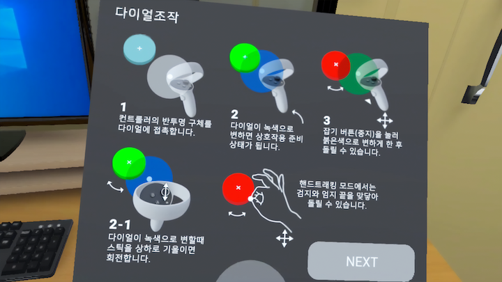
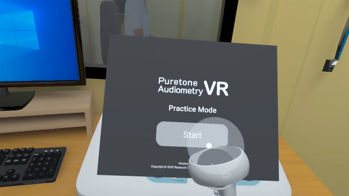
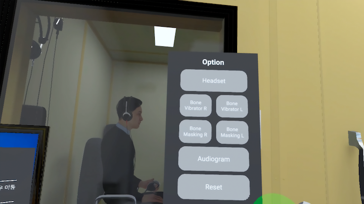

Puretone Audiometry VR은 임상 청력검사 실습 교육을 위한 VR 훈련 시스템입니다. 실제 난청환자 케이스에 기반한 다양한 임상 시나리오를 디지털트윈 환경에서 반복 경험 할 수 있습니다.
임상에서 실시하는 표준 청력검사는 숙련된 청각사와 고가 장비가 필수입니다.
현실에서는 환자를 두고 복잡한 기기 운용과 검사 방법을 반복 훈련 하는 것은 불가능합니다.
전문가 양성 과정에서 발생하는 현실적인 제약을 디지털트윈 기술로 해결합니다.
독립형 VR 기기에서 실시간으로 물리기반 렌더링(PBR) 가능한 최적화 기술로 실제 청력검사실 환경을 충실하게 재현해, 시간과 장소의 제약 없이 몰입형 훈련이 가능합니다.
실제 난청환자 데이터베이스로 생성한 디지털트윈 아바타와 함께 훈련합니다. 희귀 환자 케이스 시나리오와 다양한 임상 변수를 자유롭게 설정할 수 있습니다.

VR에 익숙하지 않은 실습자를 위한 조작법 설명 및 단계별 절차적 가이드를 제공 합니다. VR 기기 온보딩과 친숙화 부담을 줄입니다.

실습자가 설정한 환경 옵션으로 자유롭게 검사와 기기조작을 반복 훈련 할 수 있습니다. VR 훈련 효과를 극대화 시켜주는 모드입니다.

검사 훈련 성과 출력 데이터로 훈련생의 역량을 측정합니다. 표준 코스로 교육자 평가가 가능합니다.
무선 독립형 HMD로 검사실 없이도 어디서든 훈련 가능합니다.
반복 훈련과 즉각 피드백으로 전통적인 도제식 교육 대비 학습 속도를 높입니다.
희귀 케이스와 다양한 장비 유형을 콘텐츠로 제공해 현장 경험의 편차를 해소합니다.
실제 환자 없이도 고위험 상황을 안전하게 경험하고 대응 능력을 기릅니다.
훈련 기록과 성과 지표를 축적해 교육 프로그램의 품질을 지속적으로 개선합니다.
플랫폼을 유지하며 콘텐츠의 교체 만으로 다양한 의료분야 교육에 유연하게 대응합니다.
이석증 진단 치료 교육VR
측두골 수술 시뮬레이터